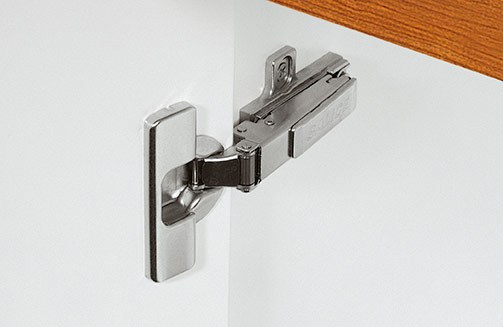

CREATURA
SALICE
09 / 22
Петли · с пружиной

Самозакрывающиеся петли
35 исполнений · Series 100 · 200 · 400 · 700
Классические петли с пружиной для деревянных фасадов и металлических профилей.
Открывание
от 65° до 270°
Монтаж
Domi — защёлкиванием или на винтах
Фасады
дерево, металлический профиль